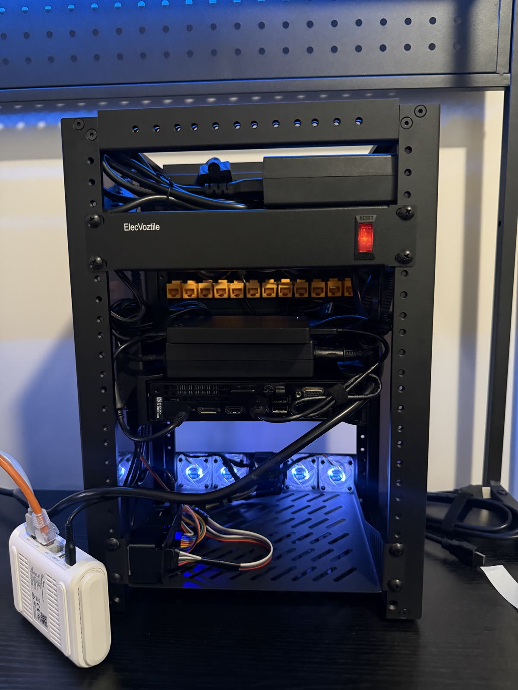
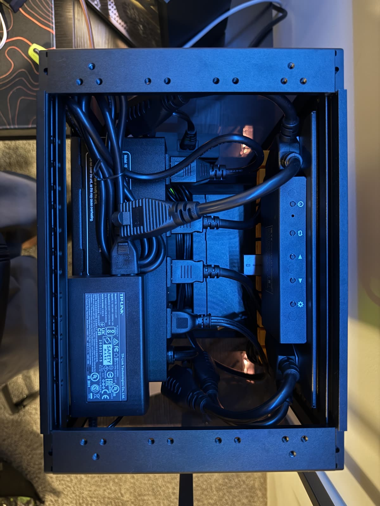
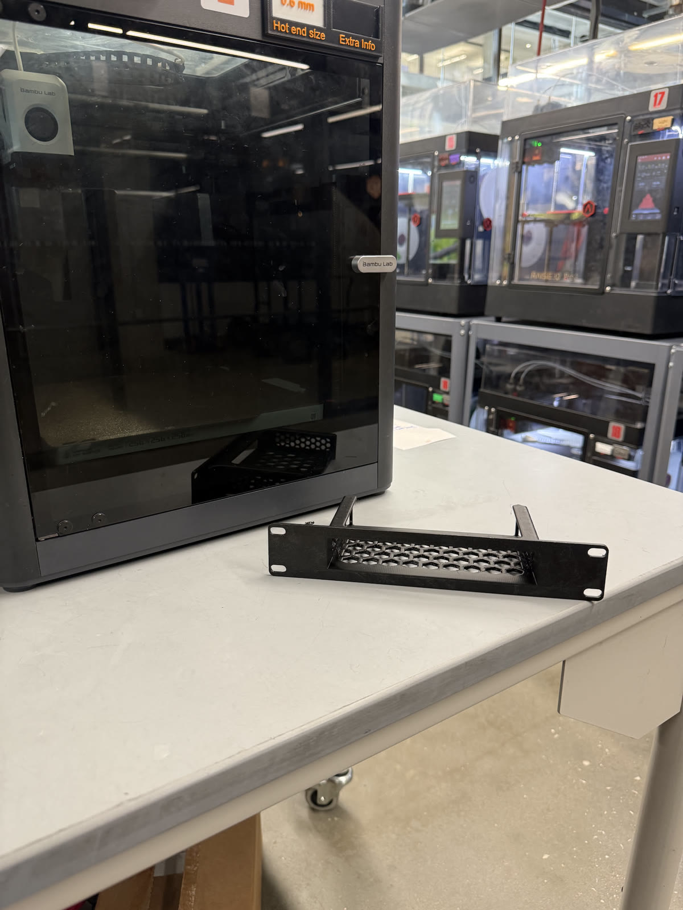
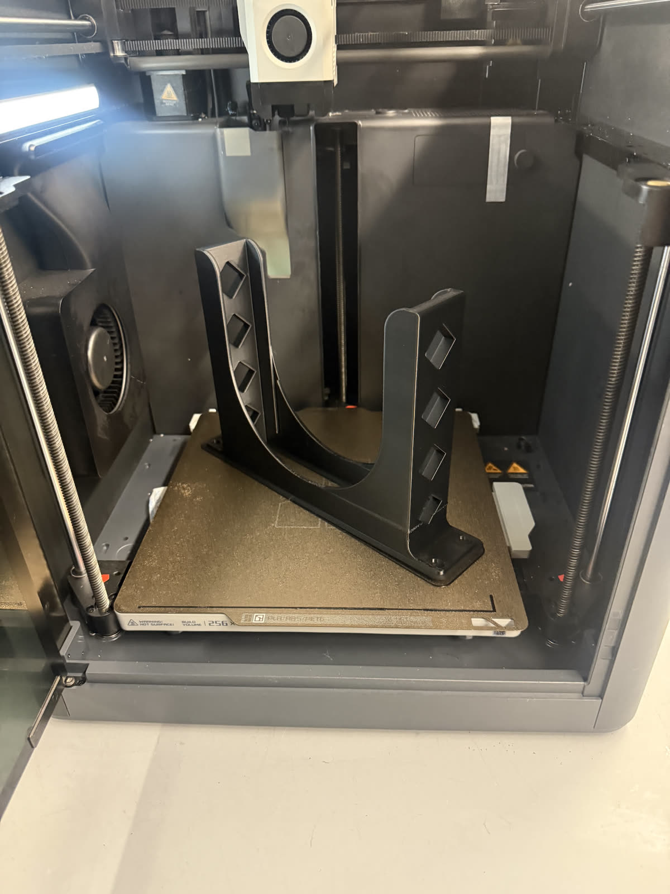
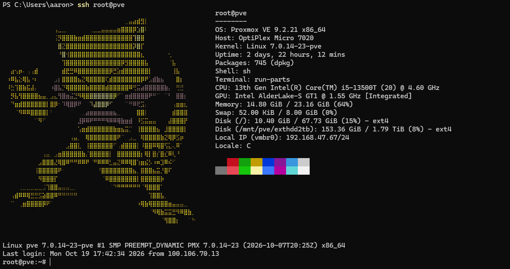
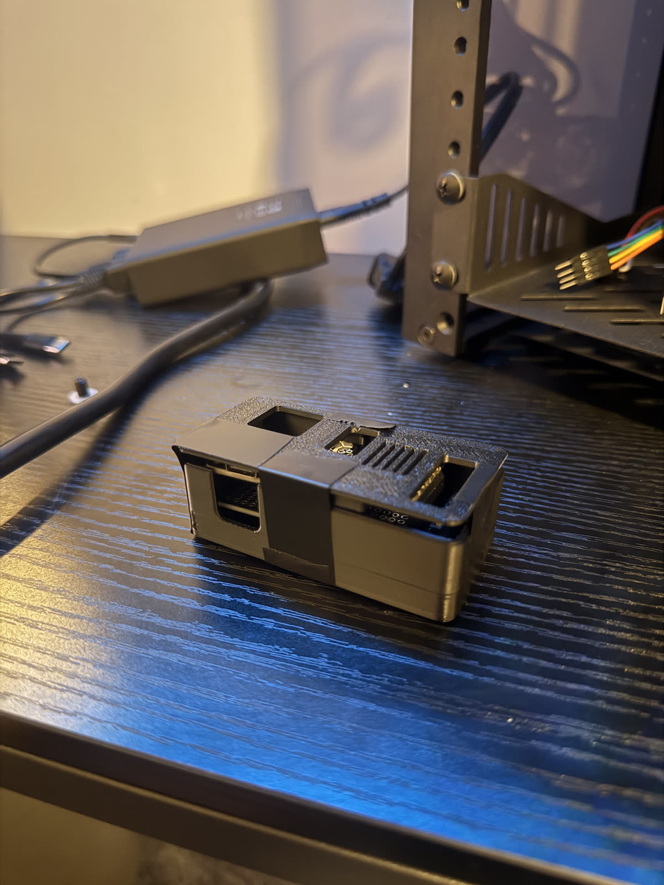

why
I wanted somewhere to dump my photos that wasn't someone else's cloud, and an excuse to actually learn proxmox, docker, and kubernetes instead of just putting them on a resume and hoping nobody asks. Also i track a weird amount of data about my life — workouts, food, every skydive — and it needs to live somewhere i own.
It started as "i'll just get a NAS" and turned into a rack. This is apparently how it goes for everyone.
how it's wired
LAN (apartment wall jack)
└── [ GL.iNet opal — the actual router, .1 ]
└── [ TP-Link TL-SG108PE (switch) ]
├── [ optiplex 7020 — pve, .67 ]
│ ├── vm debian: immich, snapotter
│ ├── vm home assistant os
│ ├── lxc monitoring: influxdb + grafana
│ ├── lxc mqtt
│ ├── lxc vaultwarden
│ └── [ usb enclosure: 2 hdds, backups ]
├── [ optiplex 5070 — cluster node 2 ]
└── [ optiplex #3 — cluster node 3 ]
This changes a lot. It's roughly right. Every hop in the rack goes through the patch panel — wall to panel to the opal's wan port, opal lan back through the panel to the switch, switch through the panel to the 7020. RJ45 keystone couplers, so it's honestly just cable theater, but it looks right. I terminated the panel-to-7020 run myself. Tailscale is on everything now, so i can get in from anywhere without the old gaming-pc-as-subnet-router hack.


the hardware
- node 1
- Dell optiplex micro 7020, i5-13500T, 24gb ddr5. The original box, picked up locally. Runs proxmox headless as
pveand holds all the storage-heavy stuff. - node 2
- Optiplex 5070 micro, i7-9700T. Bought barebones off ebay — no ram, no ssd — then fitted with crucial ddr4-3200 sodimms and a seagate firecuda 530 nvme. Going used for the ddr4 nodes was the whole point: more cluster per dollar.
- node 3
- Optiplex 7060 micro, i5-8500T, getting 2x16gb of the same ddr4-3200. Completes the cluster. All three are black minis, which is non-negotiable — the rack has a look.
- disks
- On the 7020: 256gb nvme for proxmox, 2tb nvme for VMs and photos. Two hard drives in a usb enclosure as the backup target.
- os
- Proxmox ve, building toward a 3-node cluster. Mostly LXC containers plus a couple VMs.
- network
- The gl.inet opal is the actual router and gateway, feeding a refurb TP-Link 8-port poe switch through the patch panel. Tailscale on everything for remote access.
- rack
- Deskpi rackmate t1 plus (8U), a 10-inch pdu whose 4 outlets became 6 with plug splitters, a 2U 7.84" 1280×400 hdmi touch lcd (monitor-only — still deciding what drives it), and the custom fan controller below.
- backups
- Weekly vzdump of the infra + vaultwarden to the external hdd (sunday 1am, keep 2), a daily vaultwarden backup at 9pm (keep 7), and immich monthly (keep 1) because the library is big. If the power goes out, everything just turns off. A ups is on the list.




what's running
immichPhotos and videos, replaces paying for cloud storage. Lives in a debian vm at .71 — ~146gb compressed, roughly half photos half video.snapotterSelf-hosted file toolkit — image, video, and pdf conversions on my own hardware. Currently docker inside the immich vm; headed for k3s.mqttThe message bus everything else talks over. Lab topics live underlab/.influxdb + grafanaA monitoring lxc pulling proxmox, home assistant, and mqtt data into dashboards for everything i track about my life.haosHome assistant vm.vaultwardenSelf-hosted bitwarden in an unprivileged debian 12 lxc at .72, so my passwords live on my own hardware. Bitwarden's free cloud tier is the backup, which feels backwards and is.
the kubernetes plan
One k3s server vm per proxmox node, so the cluster is three servers with headroom left on each host. The k3s cluster only gets the storage-light stuff — mqtt, snapotter, maybe vaultwarden later. Anything that hoards disk, like immich, stays a regular vm on the 7020. Kubernetes for a password manager and a message bus is wildly over-engineered, which is exactly the resume line i'm after.
the greeter
SSH into the box and an Abra greets you next to the system stats. Abra's been my favorite pokemon forever — i'm @abra on snapchat, to the point that my friends just call me abra in person — so when the login banner needed ascii art, there was exactly one candidate.

stuff i broke
The opal wedged itself: web ui dead, nothing on the lan reachable, everything intermittently slow — while still happily passing internet traffic, which made it take way too long to blame the router. Power cycle fixed it. The oldest trick, because it works.
Set the static ip to a 192.168.100.x address during the proxmox install when everything else lives on the 47 subnet, then spent a while wondering why nothing could reach it. It was doing exactly what i told it to do.
the fan controller saga
I wanted 40mm fans with rgb that pulses between orange and white. Simple ask, i thought. My first plan was to plug the fans into a usb hub and have the mini pc control their speed and color. Turns out usb fans only take power — there's no data line, so the pc can't tell them anything. Also most 40mm fans are 12v and usb gives 5v, so they'd barely spin. Strike one.
The real answer was a whole food chain: pwm for speed, an addressable data line for the rgb, and a microcontroller sitting in between to drive it all. So now there's an esp32 whose entire job is fans and lights. It talks over mqtt, which means the mini pc is still the one in charge — it just took three more hops than i expected.

The esp32 fought me too. I had one from a starter kit that i was convinced needed an expansion board i didn't have, so i never got it going. It didn't need one. That plus drivers, com ports that vanish mid-upload, and boot buttons held in the right order — flashing a microcontroller on windows is a ritual.
Then i gave the controller a static ip, because that felt responsible. Learned later that with mqtt only the broker needs a fixed address — everything else just dials out. It's on dhcp now and nothing cares.
Once the breadboard version worked, i soldered the whole thing onto protoboard so it could live in the rack without a bump undoing it.


It got a printed housing too. I measured the board slightly wrong, so the case needed some post-processing. Electrical tape is a valid engineering material and i won't be taking questions.

Current state: it's in the rack. Four fans glowing, the little lcd reading temps, humidity, and fan speed. 40mm fans whine if you run them fast, so they run slow and temperature-controlled. Everything is a tradeoff.

next
Standing up the full 3-node proxmox cluster and moving the light services into k3s, figuring out what drives the rack's touch screen, getting homelab stats onto my smart glasses, a ups so a power blip isn't a full outage, and whatever breaks next. None of this is necessary. That's the point.
Configs will end up on github eventually.